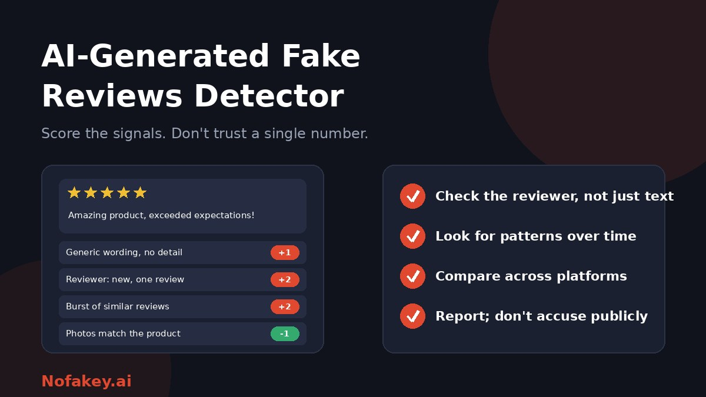

Five glowing stars, a friendly paragraph, and a business you have never heard of. Reviews guide where we eat, what we buy and which service we trust, and generative AI has made fake ones cheap and fluent. Detectors that claim to catch them are everywhere, yet research and common sense agree on one thing: the text alone rarely tells the whole story. This guide explains how fake review detectors work, where they fall short, and a simple scorecard you can use yourself.
How AI fake review detectors work
There is no single method, but most approaches combine a few of these:
- Text analysis. A model trained on examples of real and fake reviews learns patterns in word choice, tone and structure.
- Reviewer signals. Account age, review history, variety of businesses reviewed and how the profile looks.
- Behaviour and timing. Bursts of similar reviews, ratings that do not fit a business's usual pattern, or repeated posting from linked accounts.
- Duplicate and similarity checks. The same phrases reused across reviews, businesses or accounts.
- Media checks. Photos that appear elsewhere, are mismatched with the product, or look synthetic.
Platforms usually use combinations of these, mostly hidden from the public. Free consumer tools tend to rely on text and a few simple signals.
What research suggests, and why it matters
Academic studies are encouraging but come with caveats worth knowing.
- Machines can beat humans. Several studies found that trained classifiers detected machine-written reviews far better than human judges, who tended to be less accurate and disagree with each other.
- Performance depends on the test. A detector trained on one dataset can do very well on similar data, then lose accuracy on reviews from other platforms or from AI models it has not seen. Real-world results can differ from lab results.
- AI-written reviews may leave patterns. One study of restaurant reviews that had already passed a platform's filter found that machine-written ones tended to score higher ratings, came from accounts with less established reputations, were easier to read and were more common on lightly visited businesses. Patterns like these can change as tools and tactics change.
- It is an arms race. As detectors improve, generation tools and prompts adapt.
The practical takeaway: do not trust one score, and do not assume you can "just tell." For the wider problem, see are AI detectors accurate?
What detectors can and cannot tell you
| They can | They cannot |
|---|---|
| Flag reviews that resemble AI or known fake patterns | Prove a review is fake or that a business is dishonest |
| Help platforms spot coordinated campaigns | Tell the difference between an honest customer using AI to polish wording and a fabricated review |
| Reveal suspicious patterns across many reviews | Be reliable on short reviews with little text |
| Support a closer human look | Work equally well on every platform, language and AI model |
Note that AI-written is not the same as fake. A real customer may use AI to phrase a genuine experience, and a fake review can be typed by hand. What matters is whether the review reflects a real purchase and an honest opinion.
A red-flag scorecard you can use yourself
Instead of trusting a single number, score the signals. Add a point for each flag you see, take one away for each strong sign of authenticity, and look at the total. This is a thinking aid, not a scientific test.
| Signal | Flag (+1) | Reassurance (–1) |
|---|---|---|
| Detail | Generic praise that could fit any business | Specific details: dish, staff member, what broke, how long it lasted |
| Reviewer history | New account, one review, or only five-star reviews of unrelated businesses | Long, varied history with mixed ratings |
| Timing | Many similar reviews posted close together | Reviews spread naturally over time |
| Language pattern | Same phrases across reviews, or the full business name repeated unnaturally | Varied voices and styles |
| Balance | Extremely positive or negative with no nuance | Mentions pros and cons |
| Photos | No photos, stock-looking images, or images that do not match the product | Original photos that match what was bought |
| Purchase proof | No sign of a real purchase or visit | Verified purchase or visit marker, where the platform offers one |
| Cross-platform match | Rating far above other sources with no reason | Similar picture on other sites and in independent coverage |
A review with several flags and no reassurances deserves caution. One flag alone means little. If you run a store or marketplace and want a fuller moderation process, see how to detect AI-generated product reviews in ecommerce.
How to check reviews before you buy or book
- Read the middle ratings first. Three and four-star reviews often carry the most useful detail.
- Click on reviewers. Do they have a real history, or is this their only review?
- Sort by newest and check the dates. Look for sudden surges.
- Compare platforms. Check the same business on other review sites, forums and independent coverage.
- Search for the business itself. Does it have a real address, contact details and ownership? See how to check if a website is AI-generated for trust checks you can run on any site.
- Look at the photos, and be wary of images that look too perfect or are reused across reviews.
- Trust the pattern more than any single review.
If your business is hit by fake reviews
- Document it. Save screenshots, dates, usernames and links.
- Report through the platform's tools, with evidence, and follow up if nothing happens.
- Reply calmly and factually. A short, polite reply helps real readers more than an argument does.
- Do not accuse people publicly, especially without proof. You may be wrong, and it can backfire.
- Check your records. If you cannot find a matching customer, say so politely in your report.
- Look for patterns. A sudden wave of similar negatives may be a competitor attack or a coordinated campaign, which platforms take more seriously.
- Ask real customers for honest reviews, following the platform's rules on incentives.
- Get advice if the campaign is serious or damaging. Laws on defamation and fake reviews differ by country.
Do not fight fakes with fakes
Using AI to write your own glowing reviews, or paying for them, breaks platform rules and, in many countries, consumer protection law. It also puts your business at risk of removal or penalties. If you use AI to help respond to reviews or write product descriptions, be open about it where it matters. See how to label AI-generated content. Rules on fake and incentivised reviews differ by country, so check what applies to you. This is general information, not legal advice.
Should you use a free fake review detector?
- Treat results as one signal. A "likely fake" label is a reason to look closer.
- Check what it analyses. Text only, or reviewer and timing data too?
- Be careful with extensions. Install only from official stores, review permissions, and avoid "update your checker" pop-ups. See the fake AI browser extension update scam.
- Do not paste private information into free tools.
- Test it yourself on reviews you know are genuine and ones you know are fake, if you can.
Not sure whether a review, offer or link is trustworthy? Paste it into our free checker for a quick first read.
Conclusion
AI fake review detectors can help, but they work best as one signal among several. Research shows trained systems can outperform human guesswork, yet results can drop when platforms, languages or AI models change. Score the signals yourself: detail, reviewer history, timing, language patterns, photos and cross-platform consistency. If you are a business, document, report and respond calmly, and never fight fakes with fakes. Find more guides on the Nofakey.ai blog.
Frequently asked questions
How do AI fake review detectors work?
They look for patterns in the text, such as wording and structure, and often combine them with reviewer and timing signals. Many are machine-learning classifiers trained on examples of real and fake reviews.
Are fake review detectors accurate?
Research shows classifiers can perform very well on data similar to what they were trained on, but results often drop on new data, new AI models and different platforms. Treat any score as a clue.
Can people tell AI-generated reviews from real ones?
Not reliably. Studies suggest human judges often do worse than trained classifiers, so look at the reviewer’s history and patterns across reviews as well as the wording.
What should I do if my business is hit by fake reviews?
Document them, report them through the platform’s tools with evidence, reply calmly and factually, avoid accusing anyone publicly, and seek legal advice if the campaign is serious.
Is it okay to use AI to write my own business reviews?
No. Posting fake or undisclosed incentivised reviews breaks platform rules and, in many countries, consumer protection law. Ask real customers for honest reviews instead.
Got a suspicious review, offer or link to check?
Run it through the checker